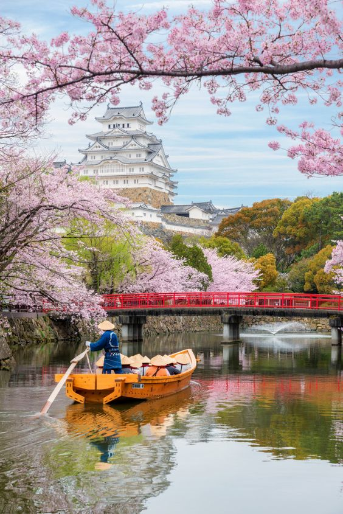
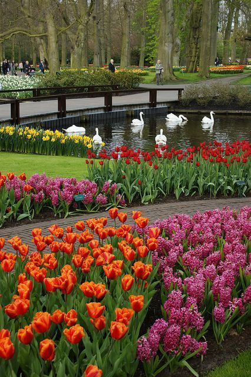

Spring Season
Beautiful Places to Visit During Spring

Himeji Castle, Japan
More than a thousand cherry trees are present on the premises of Himeji Castle. In the spring season, the white exterior appears to float over a vast expanse of pink blooms, making it an ideal location to indulge in hanami (flower viewing).

More than seven million floral bulbs are sown for the Keukenhof flower celebration in the
Netherlands. It was welcomed with surges of vivid blossoms and magnificent patterns among
large stretches of verdant lawns and beneath canopies of cherry tree blossoms.
Keukenhof Gardens, Netherlands